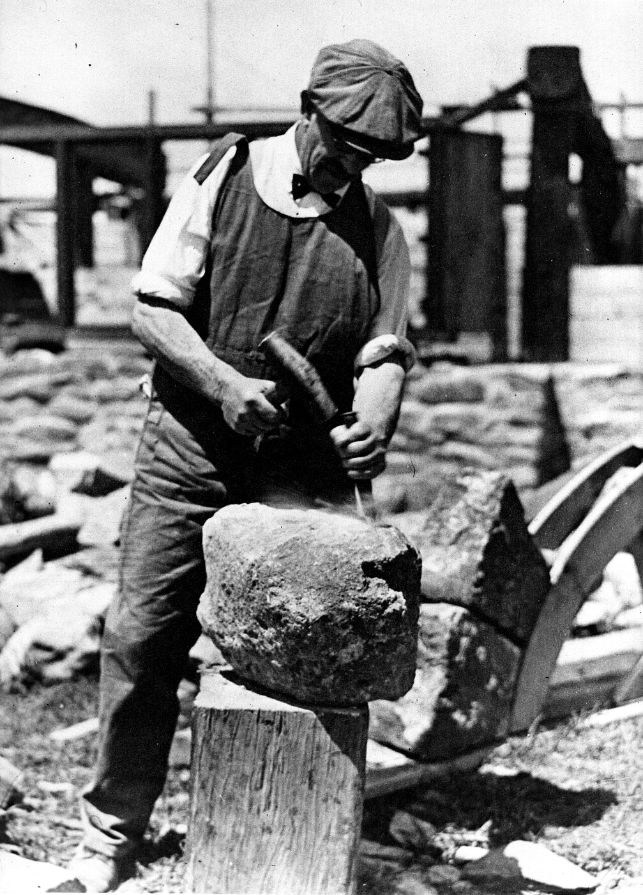
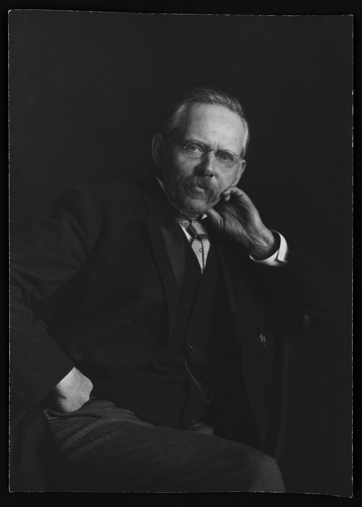

SAN ANTONIO SPURS · NBA, 2009 · FOTO: KEITH ALLISON, CC BY-SA 2.0
ENTRENADOR
GREGG POPOVICH
FOTO: MIKE (FLICKR), CC BY-SA 2.0

CANTERO, NUEVA ZELANDA, h. 1930 · FOTO: J. W. CHAPMAN-TAYLOR · DOMINIO PÚBLICO

JACOB RIIS · LIBRARY OF CONGRESS · DOMINIO PÚBLICO
LA FRASE: JACOB RIIS, «THE MAKING OF AN AMERICAN», 1901
1
GOLPES
FOTOS: KEITH ALLISON · MIKE (CC BY-SA 2.0) · J. W. CHAPMAN-TAYLOR · LIBRARY OF CONGRESS (DOMINIO PÚBLICO) · TAQUILLAS, CARTELAS, PIEDRA Y CONTADOR: RECREACIÓN